Materias sincrónicas y asincrónicas
Para que organices tu estudio a tu propio ritmo.
Inscripción abierta
La primera y única carrera oficializada en Argentina que te permite estudiar desde cualquier lugar del mundo y obtener un título terciario oficial.
Completá el formulario para saber más acerca de la carrera
La inscripción para la próxima cursada ya está abierta: podés anotarte hasta el inicio de clases.
Técnico Superior en Sonido y Producción Musical
Por qué esta carrera
Para que organices tu estudio a tu propio ritmo.
Eventos y prácticas en CABA y Mar del Plata.
El más completo del país en producción musical de nivel superior.
Importante carga horaria de materias musicales, pensadas para el productor.
La ficha
Carrera focalizada en la práctica
Herramientas de estudio
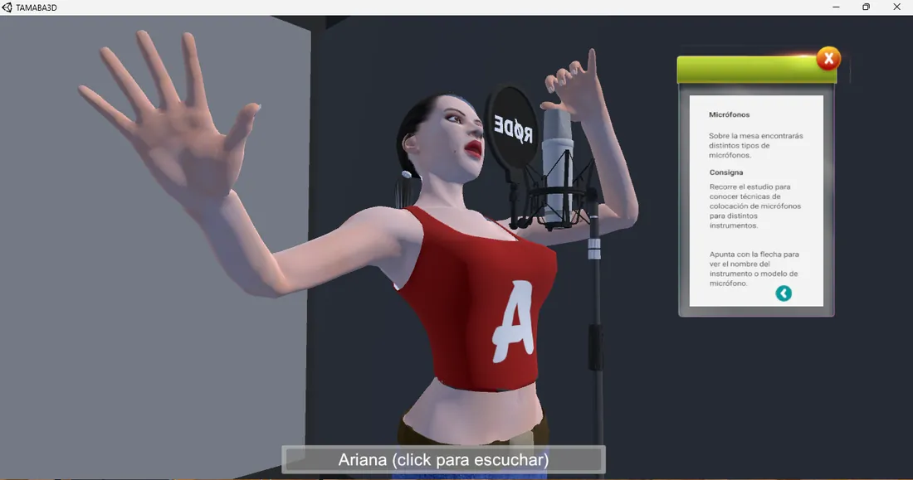
Practicá en una simulación de estudio como si estuvieras ahí.
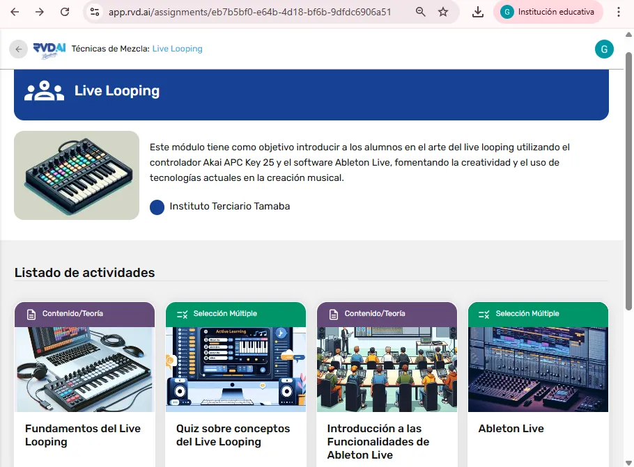
Plataforma segura y exclusiva que potencia el trabajo docente y personaliza tu aprendizaje con inteligencia artificial.
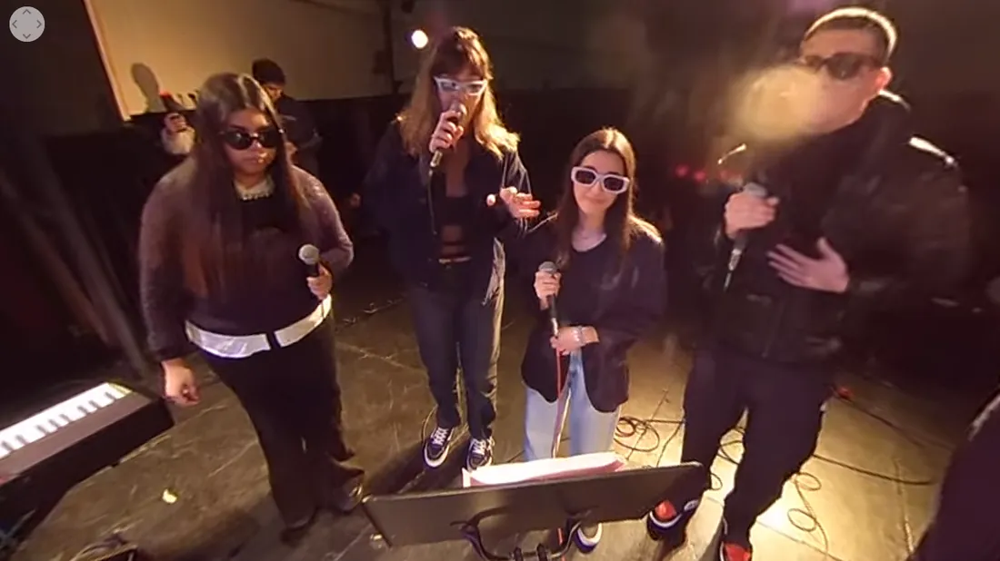
Transmitimos prácticas desde estudios y escenarios con cámaras 360°: vivilas con casco de realidad virtual, TV, PC o celular.
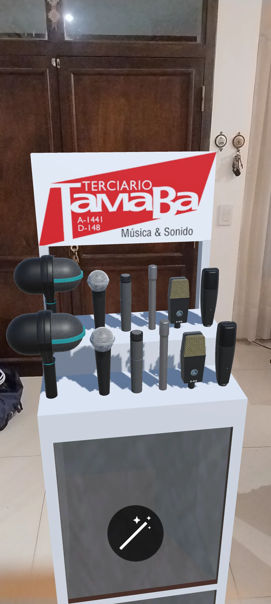
Aplicaciones para smartphones, Google Cardboard y Meta Quest para practicar con micrófonos y equipamiento profesional.
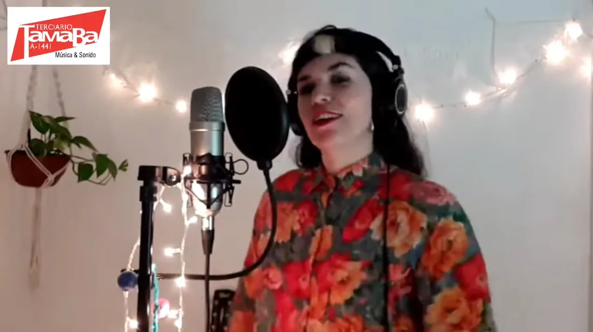
Grabá y operá en vivo a bandas y solistas que tocan en nuestro estudio, de manera remota desde tu PC.
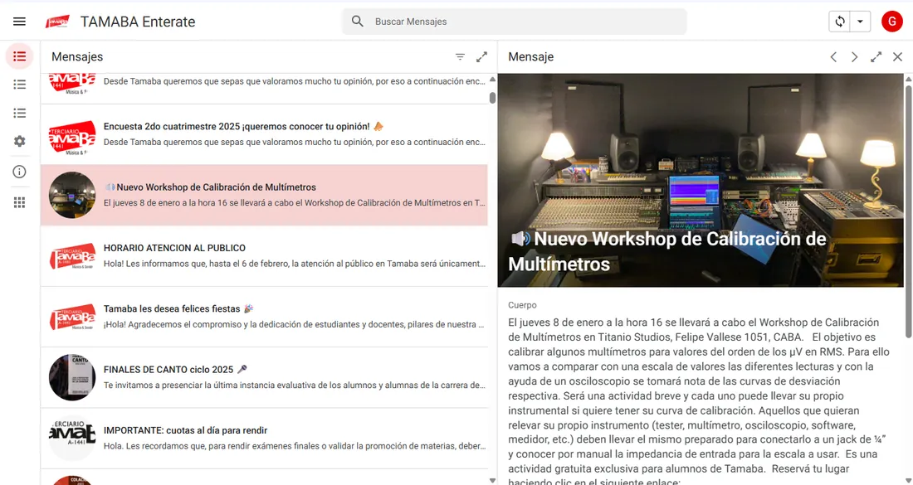
Atención por WhatsApp y una plataforma integral con campus virtual y app para gestionar toda tu carrera.
Prácticas remotas
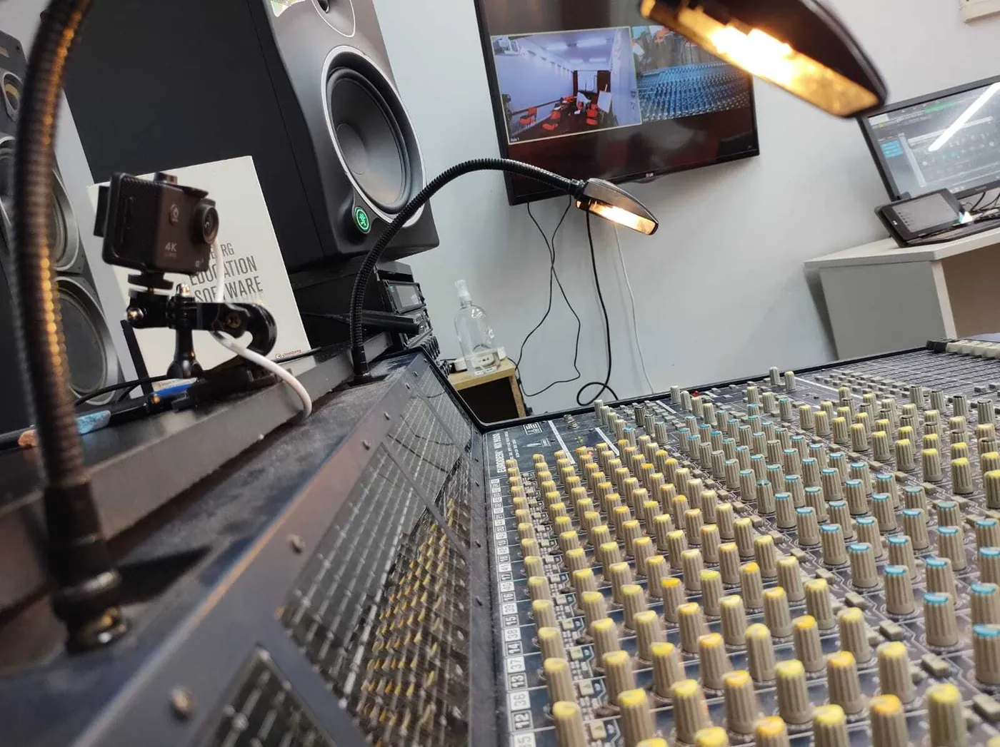
Usamos nuestros estudios como salas de grabación con soluciones como Zoom Rooms, Audiomovers, Soundtrap, AnyDesk, Reaper, Cubase y Pro Tools. Nuestros estudios, tu control.
Realizá conciertos por streaming
Con los músicos juntos en escenario o distribuidos en distintos lugares. Con compañeros técnicos presenciales y remotos.
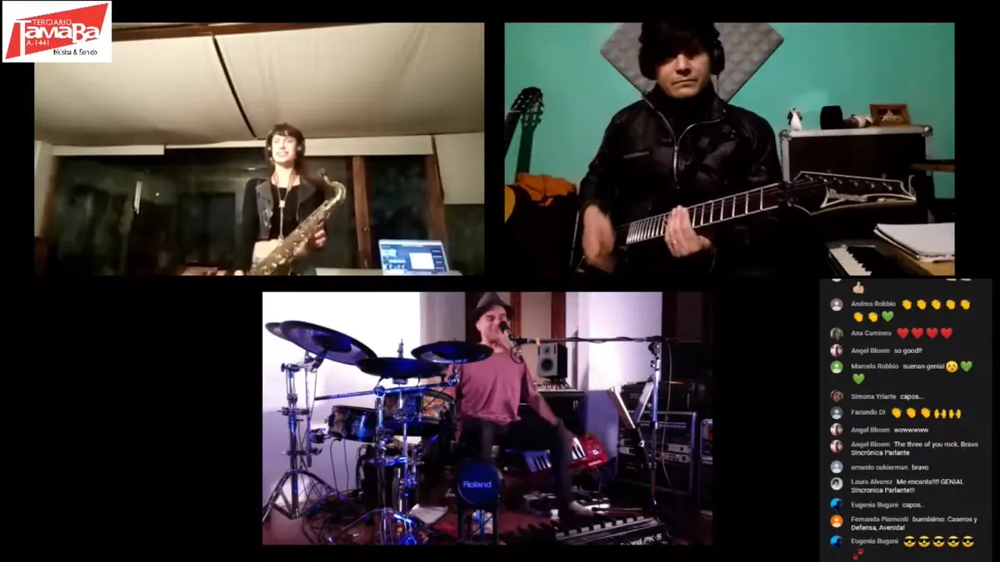
Estudiar en TAMABA
*Sujeto al compromiso y participación del estudiante.
Conocé el instituto
Preguntas frecuentes
Sí. Es un título terciario oficial de Técnico Superior en Sonido y Producción Musical, emitido con validez en toda Sudamérica, Panamá, México, Italia y España. TAMABA es el instituto A-1441, con 30 años de trayectoria.
Sí. La cursada es 100 % a distancia, con clases en vivo y materias asincrónicas. Las prácticas presenciales en Buenos Aires y Mar del Plata son opcionales.
Tres años, con certificaciones intermedias en primero y segundo año. Las clases en vivo son de lunes a viernes, entre tres y cuatro veces por semana, en turno mañana o noche.
Ser mayor de 17 años y tener el secundario completo, o estar rindiendo las últimas materias. No necesitás conocimientos previos: hay un curso de nivelación opcional.
El plan es «Todo incluido»: material de estudio, permisos de examen, campus virtual, clínicas y workshops. Consultanos por formas de pago y el programa de becas.
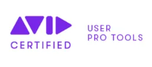
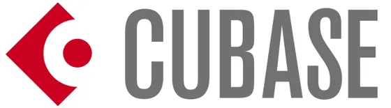
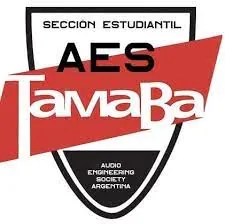
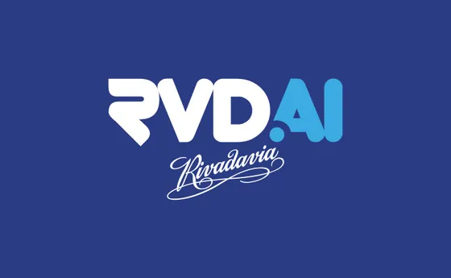
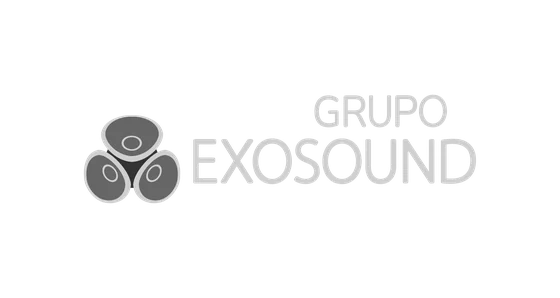
Sin compromiso. Te contamos aranceles, horarios y cómo inscribirte.
Quiero más información¿Preferís verlo con tus propios ojos? Agendá una visita o un encuentro online.